![[DBPP]](pictures//asm_color_tiny.gif)


![[Search]](pictures//search_motif.gif)
The tasks generated by a partition are intended to execute concurrently but cannot, in general, execute independently. The computation to be performed in one task will typically require data associated with another task. Data must then be transferred between tasks so as to allow computation to proceed. This information flow is specified in the communication phase of a design.
Recall from Chapter 1 that in our programming model, we conceptualize a need for communication between two tasks as a channel linking the tasks, on which one task can send messages and from which the other can receive. Hence, the communication associated with an algorithm can be specified in two phases. First, we define a channel structure that links, either directly or indirectly, tasks that require data (consumers) with tasks that possess those data (producers). Second, we specify the messages that are to be sent and received on these channels. Depending on our eventual implementation technology, we may not actually create these channels when coding the algorithm. For example, in a data-parallel language, we simply specify data-parallel operations and data distributions. Nevertheless, thinking in terms of tasks and channels helps us to think quantitatively about locality issues and communication costs.
The definition of a channel involves an intellectual cost and the sending of a message involves a physical cost. Hence, we avoid introducing unnecessary channels and communication operations. In addition, we seek to optimize performance by distributing communication operations over many tasks and by organizing communication operations in a way that permits concurrent execution.
In domain decomposition problems, communication requirements can be difficult to determine. Recall that this strategy produces tasks by first partitioning data structures into disjoint subsets and then associating with each datum those operations that operate solely on that datum. This part of the design is usually simple. However, some operations that require data from several tasks usually remain. Communication is then required to manage the data transfer necessary for these tasks to proceed. Organizing this communication in an efficient manner can be challenging. Even simple decompositions can have complex communication structures.
In contrast, communication requirements in parallel algorithms obtained by functional decomposition are often straightforward: they correspond to the data flow between tasks. For example, in a climate model broken down by functional decomposition into atmosphere model, ocean model, and so on, the communication requirements will correspond to the interfaces between the component submodels: the atmosphere model will produce values that are used by the ocean model, and so on (Figure 2.3).
In the following discussion, we use a variety of examples to show how communication requirements are identified and how channel structures and communication operations are introduced to satisfy these requirements. For clarity in exposition, we categorize communication patterns along four loosely orthogonal axes: local/global, structured/unstructured, static/dynamic, and synchronous/asynchronous.
A local communication structure is obtained when an operation requires data from a small number of other tasks. It is then straightforward to define channels that link the task responsible for performing the operation (the consumer) with the tasks holding the required data (the producers) and to introduce appropriate send and receive operations in the producer and consumer tasks, respectively.
For illustrative purposes, we consider the communication requirements associated with a simple numerical computation, namely a Jacobi finite difference method. In this class of numerical method, a multidimensional grid is repeatedly updated by replacing the value at each point with some function of the values at a small, fixed number of neighboring points. The set of values required to update a single grid point is called that grid point's stencil. For example, the following expression uses a five-point stencil to update each element 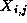 of a two-dimensional grid X :
This update is applied repeatedly to compute a sequence of values 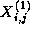, 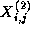, and so on. The notation 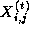 denotes the value of grid point at step t .
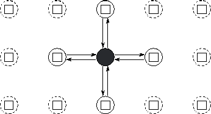
Figure 2.4: Task and channel structure for a two-dimensional finite
difference computation with five-point update stencil. In this simple
fine-grained formulation, each task encapsulates a single element of a
two-dimensional grid and must both send its value to four neighbors
and receive values from four neighbors. Only the channels used by the
shaded task are shown.
Let us assume that a partition has used domain decomposition
techniques to create a distinct task for each point in the
two-dimensional grid. Hence, a task allocated the grid point
 must compute the sequence
must compute the sequence
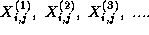This computation requires in turn the four corresponding sequences
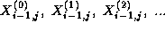
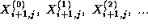
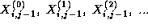
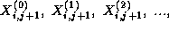which are produced by the four tasks handling grid points 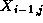, 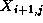, 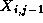, and 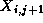, that is, by its four neighbors in the grid. For these values to be communicated, we define channels linking each task that requires a value with the task that generates that value. This yields the channel structure illustrated in Figure 2.4. Each task then executes the following logic:
for t=0 to T-1send to each neighbor
receive 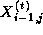, 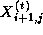, 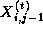, 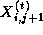 from neighbors
compute 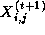 using Equation 2.1
endfor
We observed earlier that the best sequential and parallel solutions to a problem may use different techniques. This situation arises in finite difference problems. In sequential computing, Gauss-Seidel update strategies are often preferred over Jacobi strategies because they allow solutions of comparable accuracy to be obtained using fewer iterations. In a Gauss-Seidel scheme, elements are updated in a particular order so that the computation of each element can use the most up-to-date value of other elements. For example, the Jacobi update of Equation 2.1 may be reformulated as follows (notice the use of values 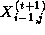 and 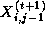):
While Jacobi schemes are trivial to parallelize (all grid points can
be updated concurrently), this is not the case for all Gauss-Seidel
schemes. For example, the update scheme of Equation 2.2 allows
only an average of around N/2
points within an
N
 N
grid to be updated concurrently. Fortunately,
many different Gauss-Seidel orderings are possible for most problems,
and we are usually free to choose the ordering that maximizes
available parallelism. In particular, we can choose to update first
the odd-numbered elements and then the even-numbered
elements of an array. Each update uses the most recent information,
yet the updates to the odd-numbered points are independent and can
proceed concurrently, as can the updates to the even-numbered points.
This update strategy yields what is referred to as a red-black
algorithm, since the points can be thought of as being colored as on a
chess board: either red (odd) or black (even); points of the same
color can be updated concurrently. Figure 2.5 illustrates
both the Gauss-Seidel scheme of Equation 2.2 and a red-black
scheme, and shows how the latter scheme increases opportunities for
parallel execution.
N
grid to be updated concurrently. Fortunately,
many different Gauss-Seidel orderings are possible for most problems,
and we are usually free to choose the ordering that maximizes
available parallelism. In particular, we can choose to update first
the odd-numbered elements and then the even-numbered
elements of an array. Each update uses the most recent information,
yet the updates to the odd-numbered points are independent and can
proceed concurrently, as can the updates to the even-numbered points.
This update strategy yields what is referred to as a red-black
algorithm, since the points can be thought of as being colored as on a
chess board: either red (odd) or black (even); points of the same
color can be updated concurrently. Figure 2.5 illustrates
both the Gauss-Seidel scheme of Equation 2.2 and a red-black
scheme, and shows how the latter scheme increases opportunities for
parallel execution.
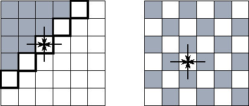
Figure 2.5: Two finite difference update strategies, here applied on a
two-dimensional grid with a five-point stencil. In both figures,
shaded grid points have already been updated to step t+1
;
unshaded grid points are still at step t
. The arrows show data
dependencies for one of the latter points. The figure on the left
illustrates a simple Gauss-Seidel scheme and highlights the five grid
points that can be updated at a particular point in time. In this
scheme, the update proceeds in a wavefront from the top left corner to
the bottom right. On the right, we show a red-black update scheme.
Here, all the grid points at step t
can be updated
concurrently.
This example indicates the important role that choice of solution strategy can play in determining the performance of a parallel program. While the simple Gauss-Seidel update strategy of Equation 2.2 may be appropriate in a sequential program, it is not ideal on a parallel computer. The Jacobi update strategy is efficient on a parallel computer but is inferior numerically. The red-black scheme combines the advantages of both approaches.
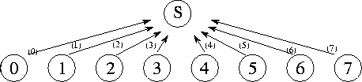
Figure 2.6: A centralized summation algorithm that uses a central
manager task (S) to sum N
numbers distributed among
N
tasks. Here, N=8
, and each of the 8 channels is labeled with the
number of the step in which they are used.
A global communication operation is one in which many tasks must participate. When such operations are implemented, it may not be sufficient simply to identify individual producer/consumer pairs. Such an approach may result in too many communications or may restrict opportunities for concurrent execution. For example, consider the problem of performing a parallel reduction operation, that is, an operation that reduces N values distributed over N tasks using a commutative associative operator such as addition:
Let us assume that a single ``manager'' task requires the result
S
of this operation. Taking a purely local view of
communication, we recognize that the manager requires values  ,
, etc., from tasks 0, 1, etc. Hence, we could define a
communication structure that allows each task to communicate its value
to the manager independently. The manager would then receive the
values and add them into an accumulator (Figure 2.6).
However, because the manager can receive and sum only one number at a
time, this approach takes
,
, etc., from tasks 0, 1, etc. Hence, we could define a
communication structure that allows each task to communicate its value
to the manager independently. The manager would then receive the
values and add them into an accumulator (Figure 2.6).
However, because the manager can receive and sum only one number at a
time, this approach takes  time to sum N
numbers---not a
very good parallel algorithm!
time to sum N
numbers---not a
very good parallel algorithm!
This example illustrates two general problems that can hinder efficient parallel execution in algorithms based on a purely local view of communication:
We first consider the problem of distributing the computation and communication associated with the summation. We can distribute the summation of the N numbers by making each task i , 0<i<N-1 , compute the sum:
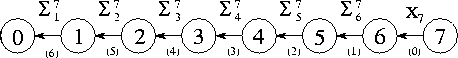
Figure 2.7: A summation algorithm that connects N
tasks in an
array in order to sum N
numbers distributed among these tasks.
Each channel is labeled with the number of the step in which it is
used and the value that is communicated on it.
The communication requirements associated with this algorithm can be satisfied by connecting the N tasks in a one-dimensional array (Figure 2.7). Task N-1 sends its value to its neighbor in this array. Tasks 1 through N-2 each wait to receive a partial sum from their right-hand neighbor, add this to their local value, and send the result to their left-hand neighbor. Task 0 receives a partial sum and adds this to its local value to obtain the complete sum. This algorithm distributes the N-1 communications and additions, but permits concurrent execution only if multiple summation operations are to be performed. (The array of tasks can then be used as a pipeline, through which flow partial sums.) A single summation still takes N-1 steps.
Opportunities for concurrent computation and communication can often be uncovered by applying a problem-solving strategy called divide and conquer. To solve a complex problem (such as summing N numbers), we seek to partition it into two or more simpler problems of roughly equivalent size (e.g., summing N/2 numbers). This process is applied recursively to produce a set of subproblems that cannot be subdivided further (e.g., summing two numbers). The strategy is summarized in Algorithm 2.1. The divide-and-conquer technique is effective in parallel computing when the subproblems generated by problem partitioning can be solved concurrently. For example, in the summation problem, we can take advantage of the following identity (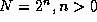, n an integer):
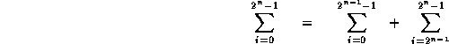
The two summations on the right hand side can be performed concurrently. They can also be further decomposed if n>1 , to give the tree structure illustrated in Figure 2.8. Summations at the same level in this tree of height 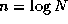 can be performed concurrently, so the complete summation can be achieved in rather than N steps.
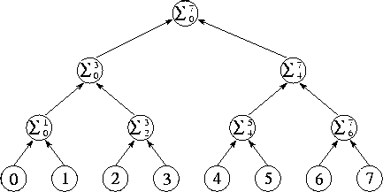
Figure 2.8: Tree structure for divide-and-conquer summation algorithm
with N=8
. The N
numbers located in the tasks at the
bottom of the diagram are communicated to the tasks in the row
immediately above; these each perform an addition and then forward the
result to the next level. The complete sum is available at the root
of the tree after  steps.
steps.
In summary, we observe that in developing an efficient parallel summation algorithm, we have distributed the N-1 communication and computation operations required to perform the summation and have modified the order in which these operations are performed so that they can proceed concurrently. The result is a regular communication structure in which each task communicates with a small set of neighbors.
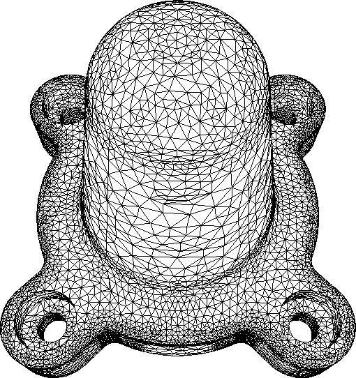
Figure 2.9: Example of a problem requiring unstructured communication.
In this finite element mesh generated for an assembly part, each
vertex is a grid point. An edge connecting two vertices represents a
data dependency that will require communication if the vertices are
located in different tasks. Notice that different vertices have
varying numbers of neighbors. (Image courtesy of M.
S. Shephard.)
The examples considered previously are all of static, structured communication, in which a task's communication partners form a regular pattern such as a tree or a grid and do not change over time. In other cases, communication patterns may be considerably more complex. For example, in finite element methods used in engineering calculations, the computational grid may be shaped to follow an irregular object or to provide high resolution in critical regions (Figure 2.9). Here, the channel structure representing the communication partners of each grid point is quite irregular and data-dependent and, furthermore, may change over time if the grid is refined as a simulation evolves.
Unstructured communication patterns do not generally cause conceptual difficulties in the early stages of a design. For example, it is straightforward to define a single task for each vertex in a finite element graph and to require communication for each edge. However, unstructured communication complicates the tasks of agglomeration and mapping. In particular, sophisticated algorithms can be required to determine an agglomeration strategy that both creates tasks of approximately equal size and minimizes communication requirements by creating the least number of intertask edges. Algorithms of this sort are discussed in Section 2.5.1. If communication requirements are dynamic, these algorithms must be applied frequently during program execution, and the cost of these algorithms must be weighed against their benefits.
The examples considered in the preceding section have all featured synchronous communication, in which both producers and consumers are aware when communication operations are required, and producers explicitly send data to consumers. In asynchronous communication, tasks that possess data (producers) are not able to determine when other tasks (consumers) may require data; hence, consumers must explicitly request data from producers.
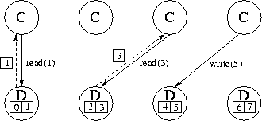
Figure 2.10: Using separate ``data tasks'' to service read and write
requests on a distributed data structure. In this figure, four
computation tasks (C) generate read and write requests to eight data
items distributed among four data tasks (D). Solid lines represent
requests; dashed lines represent replies. One compute task and one
data task could be placed on each of four processors so as to
distribute computation and data equitably.
This situation commonly occurs when a computation is structured as a set of tasks that must periodically read and/or write elements of a shared data structure. Let us assume that this data structure is too large or too frequently accessed to be encapsulated in a single task. Hence, a mechanism is needed that allows this data structure to be distributed while supporting asynchronous read and write operations on its components. Possible mechanisms include the following.
Each strategy has advantages and disadvantages; in addition, the performance characteristics of each approach vary from machine to machine. The first strategy can result in convoluted, nonmodular programs because of the need to intersperse polling operations throughout application code. In addition, polling can be an expensive operation on some computers, in which case we must trade off the cost of frequent polling against the benefit of rapid response to remote requests. The second strategy is more modular: responsibility for the shared data structure is encapsulated in a separate set of tasks. However, this strategy makes it hard to exploit locality because, strictly speaking, there are no local data: all read and write operations require communication. Also, switching between the computation and data tasks can be expensive on some machines.
Having devised a partition and a communication structure for our parallel algorithm, we now evaluate our design using the following design checklist. As in Section 2.2.3, these are guidelines intended to identify nonscalable features, rather than hard and fast rules. However, we should be aware of when a design violates them and why.
© Copyright 1995 by Ian Foster